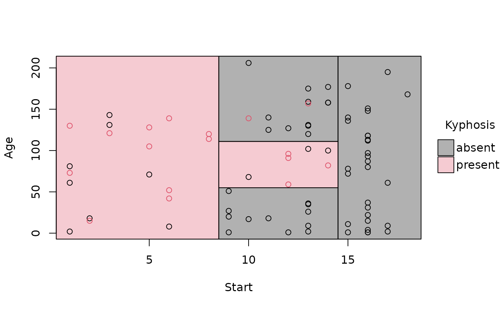
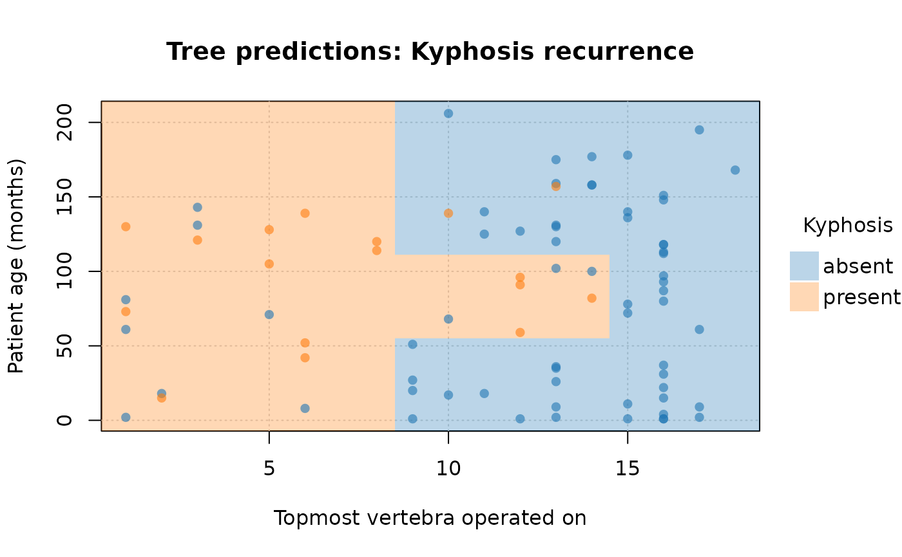
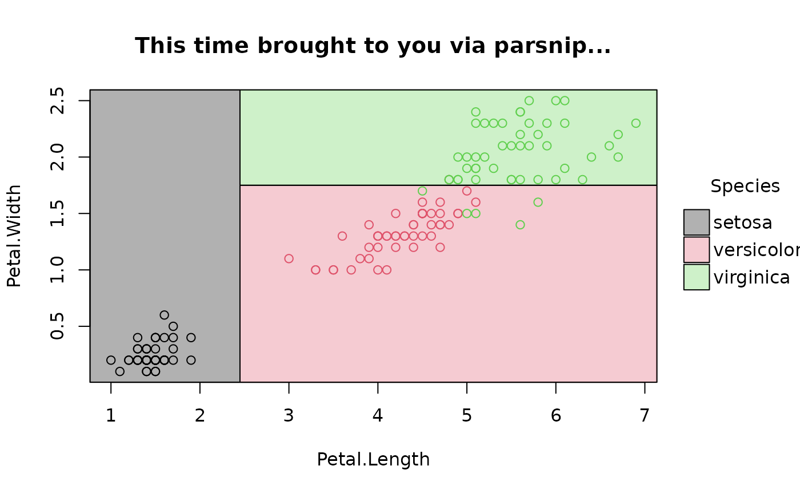
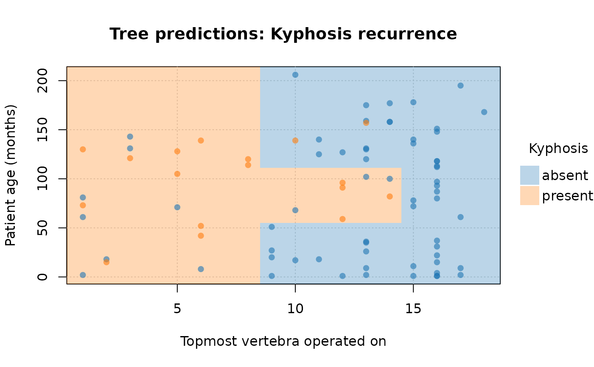
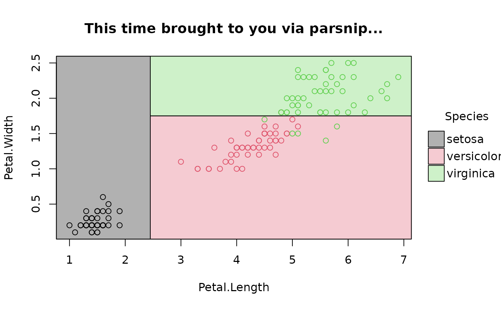

Extracts the terminal leaf nodes of a decision tree that contains no more that two numeric predictor variables. These leaf nodes are then converted into a data frame, where each row represents a partition (or leaf or terminal node) that can easily be plotted in 2-D coordinate space.
Arguments
- tree
An
rpart.objector alike. This includes compatible classes from themlr3andtidymodelsfrontends, or theconstpartyclass inheriting fromparty.- keep_as_dt
Logical. The function relies on
data.tablefor internal data manipulation. But it will coerce the final return object into a regular data frame (default behavior) unless the user specifiesTRUE.- flip
Logical. Should we flip the "x" and "y" variables in the return data frame? The default behaviour is for the first split variable in the tree to take the "y" slot, and any second split variable to take the "x" slot. Setting to
TRUEswitches these around.Note: This argument is primarily useful when it passed via geom_parttree to ensure correct axes orientation as part of a
ggplot2visualization (see geom_parttree Examples). We do not expect users to callparttree(..., flip = TRUE)directly. Similarly, to switch axes orientation for the native (base graphics) plot.parttree method, we recommend callingplot(..., flip = TRUE)rather than flipping the underlyingparttreeobject.
Value
A data frame comprising seven columns: the leaf node, its path, a set of rectangle limits (i.e., xmin, xmax, ymin, ymax), and a final column corresponding to the predicted value for that leaf.
Examples
library("parttree")
#
## rpart trees
library("rpart")
rp = rpart(Kyphosis ~ Start + Age, data = kyphosis)
# A parttree object is just a data frame with additional attributes
(rp_pt = parttree(rp))
#> node Kyphosis path xmin
#> 1 3 present Start < 8.5 -Inf
#> 2 4 absent Start >= 8.5 --> Start >= 14.5 14.5
#> 3 10 absent Start >= 8.5 --> Start < 14.5 --> Age < 55 8.5
#> 4 22 absent Start >= 8.5 --> Start < 14.5 --> Age >= 55 --> Age >= 111 8.5
#> 5 23 present Start >= 8.5 --> Start < 14.5 --> Age >= 55 --> Age < 111 8.5
#> xmax ymin ymax
#> 1 8.5 -Inf Inf
#> 2 Inf -Inf Inf
#> 3 14.5 -Inf 55
#> 4 14.5 111 Inf
#> 5 14.5 55 111
attr(rp_pt, "parttree")
#> $xvar
#> [1] "Start"
#>
#> $yvar
#> [1] "Age"
#>
#> $xrange
#> [1] 1 18
#>
#> $yrange
#> [1] 1 206
#>
#> $response
#> [1] "Kyphosis"
#>
#> $call
#> rpart(formula = Kyphosis ~ Start + Age, data = kyphosis)
#>
#> $na.action
#> NULL
#>
#> $flip
#> [1] FALSE
#>
#> $raw_data
#> NULL
#>
# simple plot
plot(rp_pt)

# removing the (recursive) partition borders helps to emphasise overall fit
plot(rp_pt, border = NA)
 # customize further by passing extra options to (tiny)plot
plot(
rp_pt,
border = NA, # no partition borders
pch = 16, # filled points
alpha = 0.6, # point transparency
grid = TRUE, # background grid
palette = "classic", # new colour palette
xlab = "Topmost vertebra operated on", # custom x title
ylab = "Patient age (months)", # custom y title
main = "Tree predictions: Kyphosis recurrence" # custom title
)

#
## conditional inference trees from partyit
library("partykit")
#> Loading required package: grid
#> Loading required package: libcoin
#> Loading required package: mvtnorm
ct = ctree(Species ~ Petal.Length + Petal.Width, data = iris)
ct_pt = parttree(ct)
plot(ct_pt, pch = 19, palette = "okabe", main = "ctree predictions: iris species")
#> Error in eval(raw_data): object 'ct' not found
## rpart via partykit
rp2 = as.party(rp)
parttree(rp2)
#> node Kyphosis path xmin
#> 3 3 absent Start < 8.5 --> Start < 14.5 14.5
#> 5 5 absent Start < 8.5 --> Start >= 14.5 --> Age < 55 8.5
#> 7 7 absent Start < 8.5 --> Start >= 14.5 --> Age >= 55 --> Age < 111 8.5
#> 8 8 present Start < 8.5 --> Start >= 14.5 --> Age >= 55 --> Age >= 111 8.5
#> 9 9 present Start >= 8.5 -Inf
#> xmax ymin ymax
#> 3 Inf -Inf Inf
#> 5 14.5 -Inf 55
#> 7 14.5 111 Inf
#> 8 14.5 55 111
#> 9 8.5 -Inf Inf
#
## various front-end frameworks are also supported, e.g.
# tidymodels
# install.packages("parsnip")
library(parsnip)
decision_tree() |>
set_engine("rpart") |>
set_mode("classification") |>
fit(Species ~ Petal.Length + Petal.Width, data=iris) |>
parttree() |>
plot(main = "This time brought to you via parsnip...")

# mlr3 (NB: use `keep_model = TRUE` for mlr3 learners)
# install.packages("mlr3")
library(mlr3)
task_iris = TaskClassif$new("iris", iris, target = "Species")
task_iris$formula(rhs = "Petal.Length + Petal.Width")
#> Species ~ `Petal.Length + Petal.Width`
#> NULL
fit_iris = lrn("classif.rpart", keep_model = TRUE) # NB!
fit_iris$train(task_iris)
plot(parttree(fit_iris), main = "... and now mlr3")
# customize further by passing extra options to (tiny)plot
plot(
rp_pt,
border = NA, # no partition borders
pch = 16, # filled points
alpha = 0.6, # point transparency
grid = TRUE, # background grid
palette = "classic", # new colour palette
xlab = "Topmost vertebra operated on", # custom x title
ylab = "Patient age (months)", # custom y title
main = "Tree predictions: Kyphosis recurrence" # custom title
)

#
## conditional inference trees from partyit
library("partykit")
#> Loading required package: grid
#> Loading required package: libcoin
#> Loading required package: mvtnorm
ct = ctree(Species ~ Petal.Length + Petal.Width, data = iris)
ct_pt = parttree(ct)
plot(ct_pt, pch = 19, palette = "okabe", main = "ctree predictions: iris species")
#> Error in eval(raw_data): object 'ct' not found
## rpart via partykit
rp2 = as.party(rp)
parttree(rp2)
#> node Kyphosis path xmin
#> 3 3 absent Start < 8.5 --> Start < 14.5 14.5
#> 5 5 absent Start < 8.5 --> Start >= 14.5 --> Age < 55 8.5
#> 7 7 absent Start < 8.5 --> Start >= 14.5 --> Age >= 55 --> Age < 111 8.5
#> 8 8 present Start < 8.5 --> Start >= 14.5 --> Age >= 55 --> Age >= 111 8.5
#> 9 9 present Start >= 8.5 -Inf
#> xmax ymin ymax
#> 3 Inf -Inf Inf
#> 5 14.5 -Inf 55
#> 7 14.5 111 Inf
#> 8 14.5 55 111
#> 9 8.5 -Inf Inf
#
## various front-end frameworks are also supported, e.g.
# tidymodels
# install.packages("parsnip")
library(parsnip)
decision_tree() |>
set_engine("rpart") |>
set_mode("classification") |>
fit(Species ~ Petal.Length + Petal.Width, data=iris) |>
parttree() |>
plot(main = "This time brought to you via parsnip...")

# mlr3 (NB: use `keep_model = TRUE` for mlr3 learners)
# install.packages("mlr3")
library(mlr3)
task_iris = TaskClassif$new("iris", iris, target = "Species")
task_iris$formula(rhs = "Petal.Length + Petal.Width")
#> Species ~ `Petal.Length + Petal.Width`
#> NULL
fit_iris = lrn("classif.rpart", keep_model = TRUE) # NB!
fit_iris$train(task_iris)
plot(parttree(fit_iris), main = "... and now mlr3")